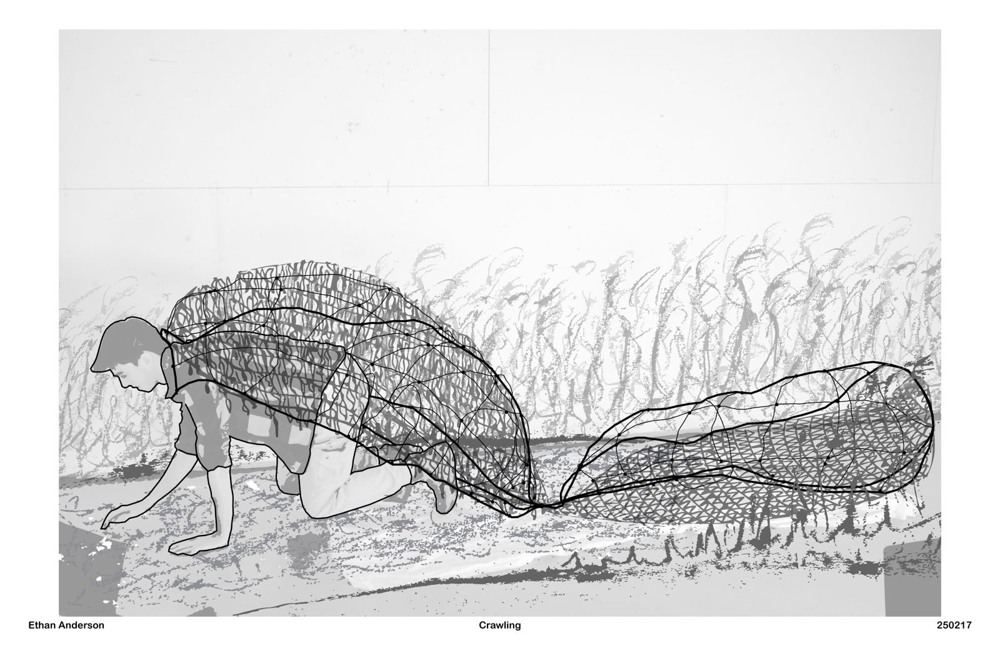
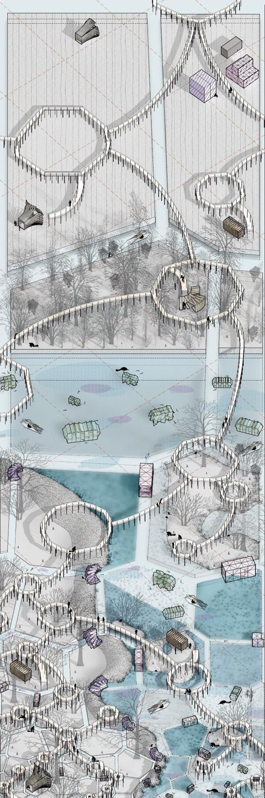

ARCH 172 · University of Illinois Urbana-Champaign · 2025
Beaver's Burden
Gizmo architecture that works alongside beavers to rewild the Kankakee Marsh: something you wear, a boat, and a field of shipping-container-sized interventions.
The story
The studio spent the semester on one brief: rewild the Kankakee Marsh, and design gizmos that help do it. This gizmo had to be wearable.
Beavers are a keystone species, especially for wetland habitat. They were once central to Midwestern river ecosystems, holding water on the land, making habitat and supporting biodiversity, so I followed them all semester. The wearable lets a person embody the beaver's experience.
The Beaver's Burden is a wearable apparatus that gathers dam-building materials. It combines two lemniscates into two volumes, one for the person and one for what they collect. The Catama-raft is a rowing-powered vessel whose netted hold and waterwheel mechanism clear invasive plants from riverbanks, making room for native species.
At the scale of infrastructure, a field of shipping-container-sized interventions manages water flow, supports field research and creates habitat. Together they bridge human engineering and animal architecture.
What I did
- Designed and modeled each device and the landscape-scale system
- Built wire models, drew, collaged and animated the mechanism as a GIF
- Figure drawings of classmates, used to study how a body carries the burden
Process
- The wearable was photographed in five positions: standing, crouching, crawling and two swimming poses (boards dated February 17, 2025)
- Figure drawing (January 2025) → shipping crate gizmos: volumes named Solar, Blow, Fold and Orbit (April 2025) → Beaver's Burden and Catama-raft → landscape axonometric (May 2025)
- Why lemniscates: I love when complexity comes out of simplicity. The lemniscate is a simple form, but it could carry this design: it gave the two volumes the brief needed, one for the human body and one for the collected materials.
- Material: the studio required modeling in rebar tie wire, and a lemniscate was a form I could bend easily from it.
- Built at full scale and worn: I made the wearable full size and filmed myself acting out its use (standing, crouching, crawling, swimming). The film became a stop-motion loop with my figure traced in outline.
Outcome
- Final title-blocked boards, a 3 × 6 ft landscape axonometric, a video and a mechanism GIF
Reflection
I love when complexity comes out of simplicity. One simple curve, doubled, could hold a body and a burden, and I could bend it by hand from tie wire. Wearing it was the point: to feel, for a moment, what a beaver's work asks of a body.
Drawings



The Kankakee River runs straight here, because people dug it straight.
Off the ditch bank, a patch of the old marsh has come back: cattails, standing water, the smell of mud.
Out in the shallows, someone is bent double under a frame of bent wire, pulling sticks from the water.
Two loops cross over their back, like a figure eight lying on its side.
One loop holds the body. The other fills with whatever the body gathers.
The figure straightens up and wades over. “Ethan.”
“Dam materials,” Ethan says, lifting the full loop. “This is how a beaver spends the day.”
Off the ditch bank, a patch of the old marsh has come back: cattails, standing water, the smell of mud.
Ethan pulls a frame of bent wire off the truck bed, shrugs into it, and wades into the shallows.
Two loops cross over the back, like a figure eight lying on its side.
One loop holds the body. The other fills with whatever the body gathers.
“Dam materials,” Ethan says, lifting a full loop of sticks. “This is how a beaver spends the day.”